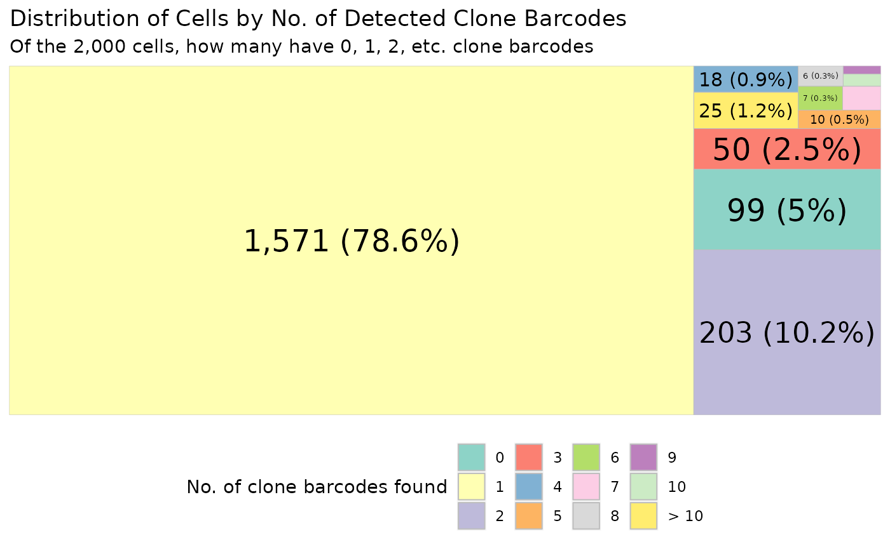

analyse_sc_data.RmdThis vignette focuses on using CloneDetective to analyse scRNAseq data. Specifically, we will look at how many clone barcodes are detected per cell, and how to assign clone barcodes to cells.
In addition to CloneDetective we’ll load the following packages:
For this vignette, we will use a simulated cell by gene matrix
generated using the scater package.
set.seed(42)
sce <- mockSCE(ncells = 2000, ngenes = 1000)
# use the colnames as the 10x cell barcode
colData(sce)$Barcode <- colnames(sce)
sce
#> class: SingleCellExperiment
#> dim: 1000 2000
#> metadata(0):
#> assays(1): counts
#> rownames(1000): Gene_0001 Gene_0002 ... Gene_0999 Gene_1000
#> rowData names(0):
#> colnames(2000): Cell_001 Cell_002 ... Cell_1999 Cell_2000
#> colData names(4): Mutation_Status Cell_Cycle Treatment Barcode
#> reducedDimNames(0):
#> mainExpName: NULL
#> altExpNames(1): SpikesFor your own dataset, you can load them up using the DropletUtils package.
Assuming you have the barcode.tsv.gz,
features.tsv.gz, matrix.mtx.gz files in a
folder filtered_feature_bc_matrix. You can load them up
into a SingleCellExperiment object like so.
sce <- read10xCounts("filtered_feature_bc_matrix")At the end, you should have in the colData of the
object, a column called Barcode which represents the 10x
cell barcode.
Assuming you have used NextClone to extract the clone barcodes from your BAM file, you will now have a CSV file where each row corresponds to a read that belongs to a cell and mapped to a clone barcode.
If you have used other pipeline to extract (which you are more than welcomed to), you will have to wrangle the output such that you get the aforementioned CSV file.
For the purpose of this vignette, I have randomly sampled 2000 cells from the scRNAseq data we used in our paper.
Let’s load it up using data.table and take a peek inside
using the head function. The data is included in the
package in extdata folder which we can located using
system.file function.
cell_clone_bcode_dt <- fread(
system.file("extdata", "sc_clone_barcodes_subsampled.csv",
package = "CloneDetective")
)
head(cell_clone_bcode_dt)
#> CellBarcode CloneBarcode SourceBAMFile
#> 1: Cell_1286 TAATGTGAAACCTAAGGAGT possorted_genome_bam
#> 2: Cell_470 AAGGCTTCGGAGGCTGCCCC possorted_genome_bam
#> 3: Cell_470 CTCAGGGGCGCGTAGTGTGG possorted_genome_bam
#> 4: Cell_1832 GTAATTGATGAGACTGCAAT possorted_genome_bam
#> 5: Cell_1832 GTAATTGATGAGACTGCAAT possorted_genome_bam
#> 6: Cell_1696 AAGGGGGGTTTGTTTCGTGG possorted_genome_bam
#> ReadId UMI FlankEditDist
#> 1: A00121:674:HVMHWDSX3:2:2312:27055:5415 TTGGGAGCATTT 2
#> 2: A00121:674:HVMHWDSX3:1:2234:1226:29105 GGTCTTACATTA 0
#> 3: A00121:674:HVMHWDSX3:1:2276:17770:35462 ACTACGAGTTAT 0
#> 4: A00121:674:HVMHWDSX3:1:2522:3540:36245 GCGGTCCACATT 0
#> 5: A00121:674:HVMHWDSX3:1:1567:21531:10848 GCGGTCCACATT 0
#> 6: A00121:674:HVMHWDSX3:2:1372:21992:8891 GGCCACAGGGAT 0
#> BarcodeEditDist
#> 1: 0
#> 2: 0
#> 3: 0
#> 4: 0
#> 5: 0
#> 6: 0Remember, each row is a read. Let’s quickly go through what the columns are:
We can use CloneDetective to generate a table that is similar to a cell by clone matrix. I said similar as it is not quite a matrix. Rather, it is a table where each row represents a cell, a clone barcode, and the number of reads detected for that cell and clone barcode.
cell_by_clone_mat = generate_cell_clone_barcode_matrix(
cell_clone_bcode_dt = cell_clone_bcode_dt,
cell_bcode_col = "CellBarcode",
clone_bcode_col = "CloneBarcode",
umi_col = "UMI",
umi_clone_consensus_threshold = 0.7
)The parameters ending with _col denotes the column that
represents the cell barcode (cell_bcode_col), the clone
barcode (clone_bcode_col), and the UMI
(umi_col).
The umi_clone_consensus_threshold represents the
proportion threshold of reads for collapsing UMIs when computing the
cell-by-clone matrix. The cell-by-clone matrix construction first
collapses reads with the same cell and UMI barcodes. For a group of
reads that have the same cell barcode and UMI barcode, if the reads are
mapped to several clone barcodes, by default, they are collapsed into
one read and assigned to the clone barcode comprising 70% or more of its
group’s reads. This threshold modifiable using this
umi_clone_consensus_threshold parameter. To apply the
default threshold of 70%, set this parameter to 0.7.
This is what the cell by clone matrix looks like.
head(cell_by_clone_mat)
#> CellBarcode CloneBarcode n_reads
#> 1: Cell_1 CGCTCCAGTGTGCAGGAATT 1
#> 2: Cell_10 GATCTCCGTCCAAGGGCTGG 1
#> 3: Cell_100 CTAGCGGGTATAGATGGTAG 1
#> 4: Cell_1000 TGTCGCTCTCTTCACGTTGG 1
#> 5: Cell_1001 CAAGGCTTGCCCGACCGTCC 1
#> 6: Cell_1002 TGTGCTTGGACGACACGCAG 1For each cell and clone barcode, we will obtain the number of reads detected.
A Treemap is useful for visualising the distribution of cells (as absolute number and proportion) according to the number of detected clone barcodes within each cell. Cells are grouped based on the number of clone barcodes detected per cell, ranging from cells with no detected barcodes to cells with ten or more barcodes detected.
To draw the treemap, we have to give it the cell barcode to draw the plot for. For this, we will use all the cell barcodes in our SingleCellExperiment object.
valid_cells_10x <- colData(sce)$Barcode
plt <- draw_treemap(
cell_by_clone_matrix = cell_by_clone_mat,
valid_cells_bcodes = valid_cells_10x
)
plt
Ideally, each cell in a scRNAseq experiment should only have a single clone barcode detected. However, it’s common to find cells with either no or multiple clone barcodes detected.
To do this, we can use the assign_and_embed_clones
function like so.
sce_with_clone <- assign_and_embed_clones(
cell_by_gene_mat = sce,
cell_clone_reads_dt = cell_clone_bcode_dt,
)
colData(sce_with_clone)
#> DataFrame with 2000 rows and 6 columns
#> Mutation_Status Cell_Cycle Treatment Barcode
#> <character> <character> <character> <character>
#> Cell_001 negative G1 treat2 Cell_001
#> Cell_002 negative S treat1 Cell_002
#> Cell_003 positive G0 treat2 Cell_003
#> Cell_004 negative G0 treat1 Cell_004
#> Cell_005 positive G2M treat2 Cell_005
#> ... ... ... ... ...
#> Cell_1996 positive G1 treat1 Cell_1996
#> Cell_1997 negative G2M treat1 Cell_1997
#> Cell_1998 negative G2M treat1 Cell_1998
#> Cell_1999 positive G2M treat1 Cell_1999
#> Cell_2000 positive G0 treat2 Cell_2000
#> clone_barcode clone_barcode_criteria
#> <character> <factor>
#> Cell_001 NA no_clones_found
#> Cell_002 NA no_clones_found
#> Cell_003 NA no_clones_found
#> Cell_004 NA no_clones_found
#> Cell_005 NA no_clones_found
#> ... ... ...
#> Cell_1996 CCGATTAGGTAAACGCAGGT single_clone
#> Cell_1997 ACAAAGACGAGGTCGGACGT single_clone
#> Cell_1998 CTGAATGATATTTCCATAGC single_clone
#> Cell_1999 GCAGGACTTTGTTGCGTAAT single_clone
#> Cell_2000 GCTGTATCATGTAGGCAGTC single_cloneYou will notice two new columns in your SingleCellExperiment object.
clone_barcode denotes the clone barcode detected for the
cell. NA means no clone barcode was detected.
clone_barcode_criteria refers to how the clone barcode
assignment was done.
This is the criteria we used to do the clone barcode assignment: